Shoo, Okayama: things to do, food and stays
Shoo · Okayama
Shoo
Highlighted on the Okayama map.

Stay
HOTEL R9 The Yard 勝央

HOTEL R9 The Yard Shoo
おかやまファーマーズ・マーケットノースヴィレッジ
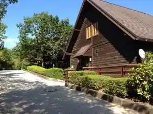
Okayama Famazu Makettonosuvirejji
Dining
勝央サービスエリア（下り線）レストラン

Shoo Sabisueria (Kudari Sen) Restaurant
パパとママ
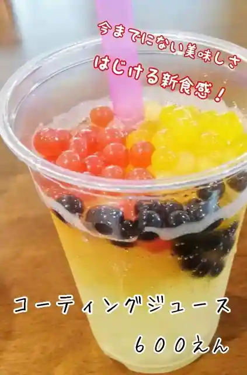
Papa To Mama
イタリア料理 ピアット ノノ
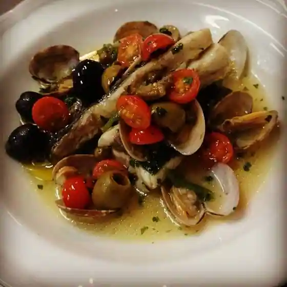
Itaria Ryori Piatto Nono
勝央レストラン
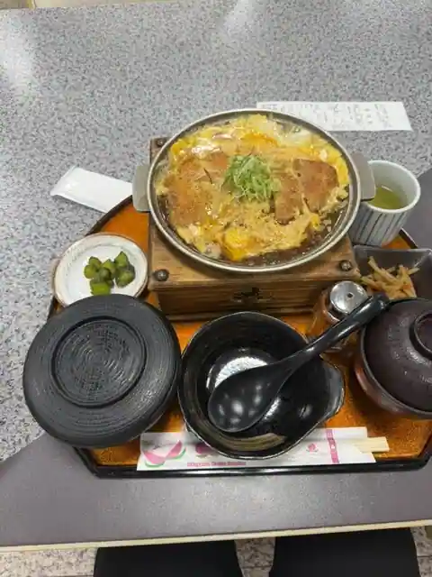
Shoo Restaurant
つるや 勝間田店
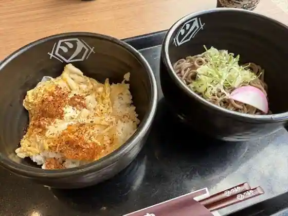
Tsuruya Katsumata
手打うどんよこ山
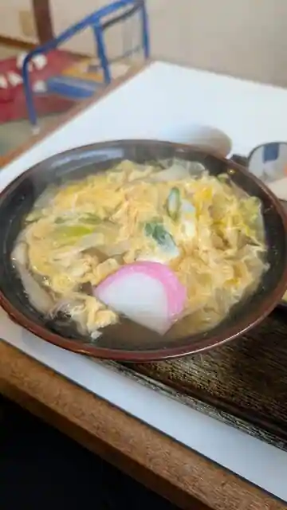
Teuchi Udonyoko Yama
cafe136
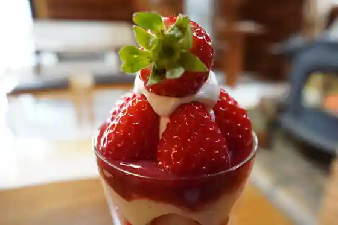
cafe136
居食屋ふれんず・うどん・そば
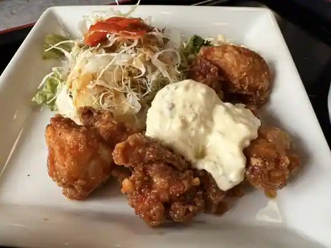
Kyo Shoku Ya Furenzu Udon Soba
あかりあん
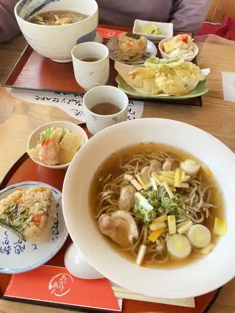
Akarian
ジャックと豆の木
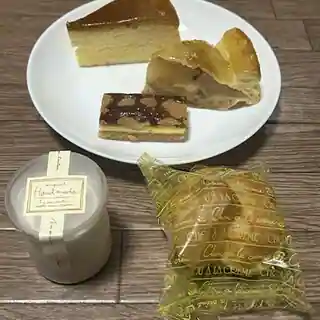
Jakku To Mame No Ki
板屋
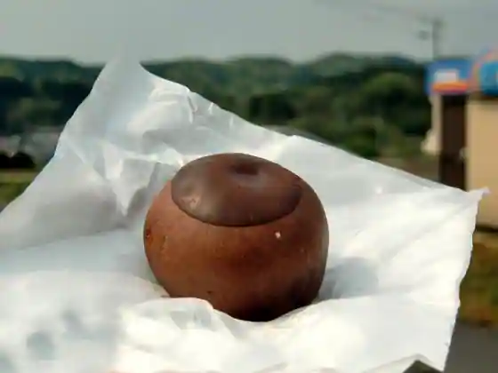
Itaya
カフェ＆ランチ丘の上
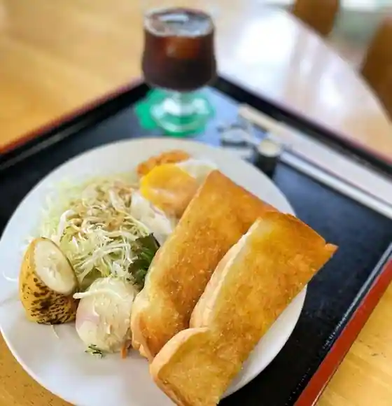
Cafe & Ranchi Oka No Ue
絵本とカフェ あーとゆーや
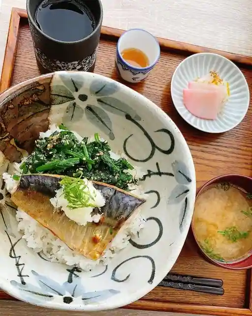
Ehon To Cafe Atoyuya
麺喰居 一蔵
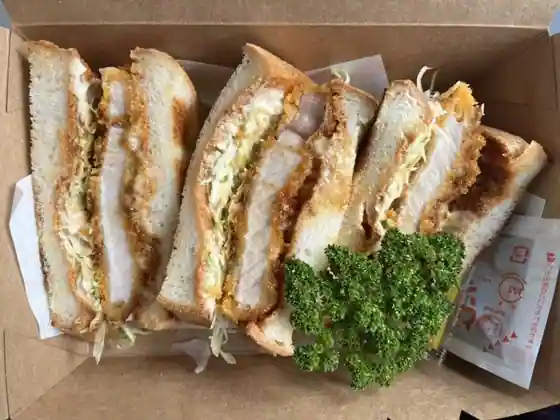
Menkui Kyo Ichi Kura
ポポロキッチン
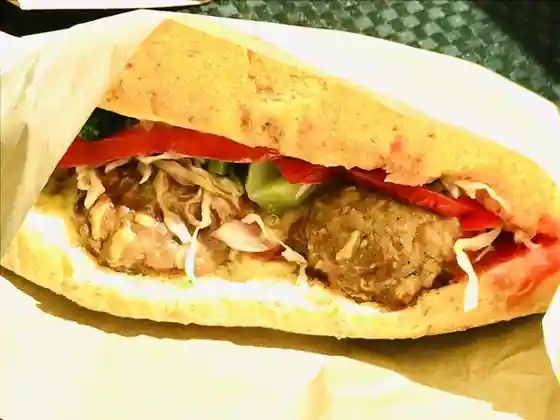
Poporo Kitchen
フルーツ&スイーツカフェ ｍeｍe
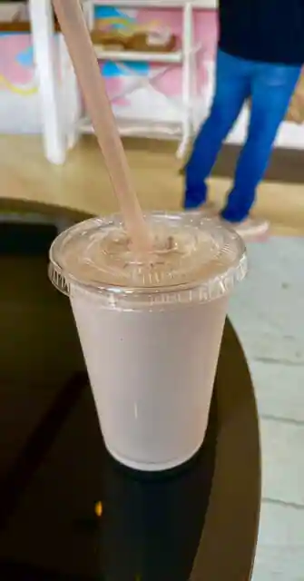
Furutsu & Sweets Cafe meme
和洋小皿とお酒 En
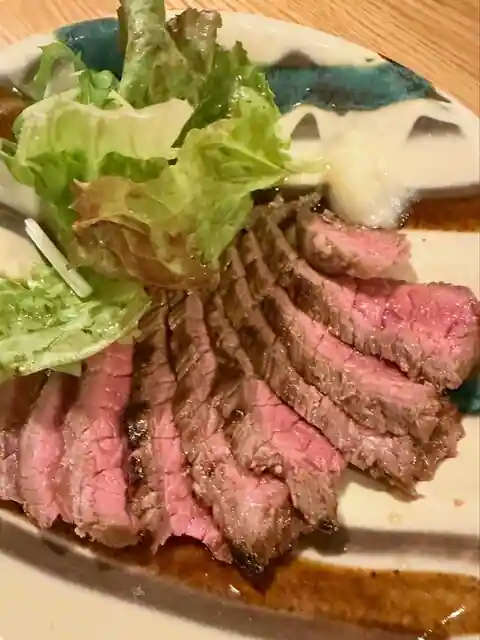
Wayo Kozara To Sake En
お好み焼家 まんまのほっ！
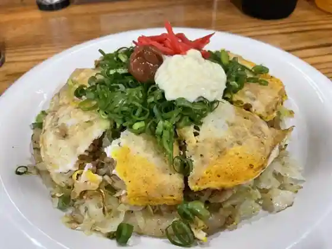
O Konomi Yaki Ie Manmanohotsu!
勝ちゃん食堂
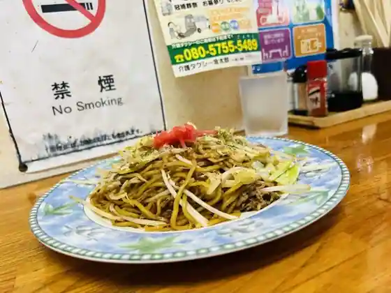
Kachi Yan Shokudo
味処てん・馬
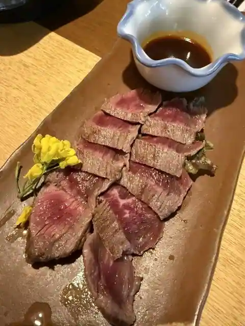
Ajidokoro Uma
忠政かしわ店
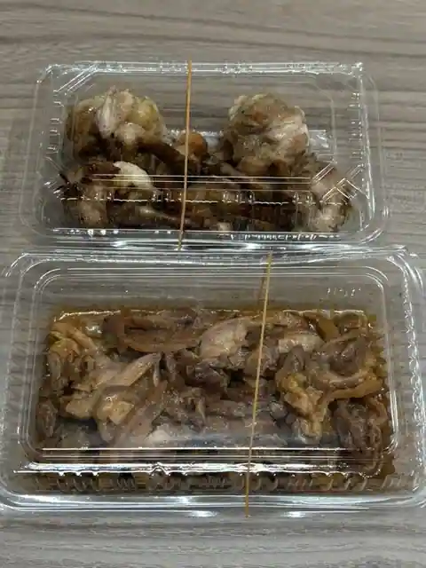
Tadamasa Kashiwa
お好み焼き しげちゃん
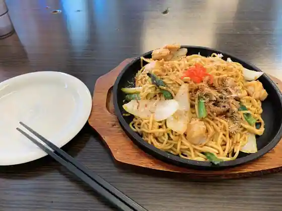
O Konomi Yaki Shigechan